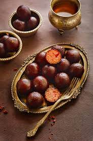

sweets

RECIPE FOR GULAB JAMUN
For the Gulab Jamun Balls:
- 1 cup of Khoya (milk solids)
- 2-3 tablespoons of all-purpose flour (maida)
- A pinch of baking soda (optional, but it helps in making them softer)
- 2-3 tablespoons of ghee (clarified butter)
- A few crushed cardamom pods (optional, for flavor)
- Chopped nuts like pistachios or almonds (optional, for garnish)
- Oil or ghee for deep frying
For the Sugar Syrup:
- 2 cups of granulated sugar
- 2 cups of water
- A few strands of saffron (optional)
- 1-2 teaspoons of rosewater or cardamom powder for flavoring